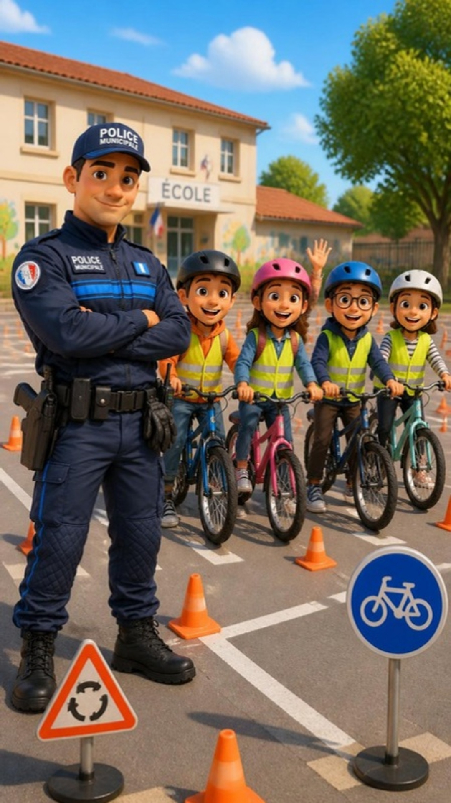

Police municipaleVotre commune
Pour les 9 – 11 ans
Le permis
vélo
4 règles pour rouler en sécurité.
CasqueVélo vérifiéBras tenduStop
Document de démonstration non officiel · illustrations générées par IA